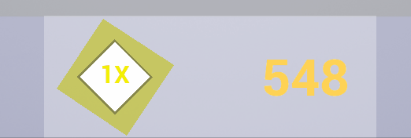
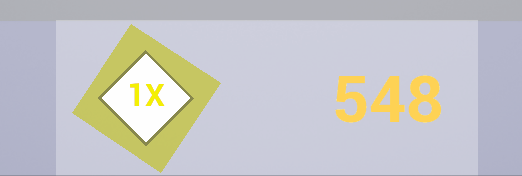
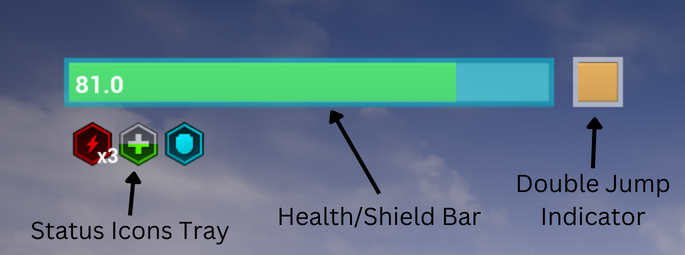
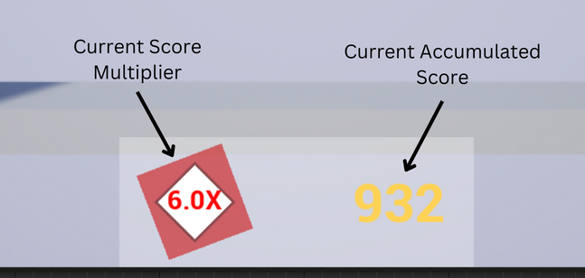

Endless Runner Implementation Details (Work-In-Progress)
Gameplay Systems
Game Mode
This class is at the center of the game, being responsible for controlling gameplay flow, spawning Actors and UMG Widgets, saving/loading settings, and all scoring related functions.
-- When the player starts a new game, Game Mode sets up the Player Character and all relevant Manager instances, as well as UI elements (C++ Implementation).
-- Game Mode loads user settings and high scores on BeginPlay(), and saves them when the player returns from the settings menu or when a game ends (C++ Implementation).
-- Scoring is done by Game Mode as the player survives in the level, and the score increase rate is multiplied based on how close the Player Character stays to the dangerous Kill Wall (C++ Implementation).
Runner Character
This class controls all Player Character movement mechanics and camera control functions.
-- Runner Character movement properties are adjustable by the player in the Settings Menu, and are applied to Runner Character by Game Mode when a new game begins (C++ Implementation).
-- Double Jump needs to be recharged every time it is used, upon which a cooldown is triggered (C++ Implementation). This system can also be extended to include triple/quadruple/etc jumps.
-- The camera has dynamic positioning, and shows more in the direction that the player is heading in. Camera movement from one position to another is smoothed out to make sure transitions are not jarring (C++ Implementation).
Player Status Manager (In-Progress)
This class manages all Health, Damage, and Status Effects features related to the Player Character.
-- When an Actor that can do damage collides with Runner Character, they call Player Status Manager to send over the damage value and damage type. Instant damage types will be applied to Health immediately, but Damage-Over-Time types will be added to a variable that is used to apply damage every tick.
Level Generator (In-Progress)
This class stores the level database and handles level generation as well as deletion during gameplay.
HUD
 

Player Status HUD

This HUD section has three main components: Health Bar, Double Jump Indicator, and Status Icons Tray.
- The Health Bar color is dynamic, and is calculated using player's current health percentage as an Alpha value to interpolate between two color values (Blueprint Implementation). A translucent blue overlay covers the Health Bar when the Shield Status is active
- The Health gain/loss is animated using two overlapping Progress Bar Widgets. When Health is added or subtracted, one Progress Bar value will be set immediately to the target value while the other will trail behind at a fixed rate (Blueprint Implementation).
- The Double Jump indicator is a mini progress bar to show the double jump cooldown progress, with an outer glow to clearly indicate whether Double Jump is ready.
- The Status Icons Tray is a Horizontal Box Widget that displays all active Status Icon Widgets. Each time a Status Effect is activated/deactivated, Player Status Manager calls the HUD Widget function to toggle the corresponding Status Icon. The HUD Widget then creates or remove the Status Icon while checking for duplicates (Blueprint Implementation).
- Status Icon functionalities are decentralised, and each Status Icon class manages its own text or progress bar by getting the relevant value from the manager classes.
Score HUD

The Score HUD displays the Current Score Multiplier and the Current Accummulated Score.
- The Multiplier has dynamic color and animation speed, similarly implemented using the distance from the player is to the moving wall as an Alpha value to interpolate between values (Mixed Implementation).
- The Multiplier text also has a small "pop" animation whenever it changes value. This is done by comparing the Text output from one frame to the next while getting the Score Multiplier value from Game Mode (Blueprint Implementation).